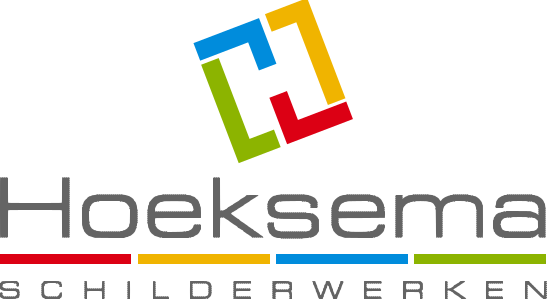

<!DOCTYPE html>
<html lang="nl">
<head>
<meta charset="UTF-8">
<meta name="viewport" content="width=device-width, initial-scale=1.0">
<meta name="robots" content="noindex">
<title>Narrowcasting — Hoeksema Schilderwerken</title>
<link rel="icon" href="media/beeldmerk.svg">
<link rel="stylesheet" href="stijl.css">
</head>
<body>
  <div id="podium" data-overgang="vervagen">
    <main id="slides" aria-live="polite"></main>
    <div id="voortgang"><div id="voortgang-balk"></div></div>
    <div id="mededeling" hidden>
      <span class="mededeling-stip"></span>
      <span id="mededeling-tekst"></span>
    </div>
    <footer id="balk">
      <div class="kleurstreep"><i class="rood"></i><i class="geel"></i><i class="blauw"></i><i class="groen"></i></div>
      <div class="balk-inhoud">
        
        <div id="ticker"><div id="ticker-baan"></div></div>
        <div id="klok">
          <div id="klok-tijd">--:--</div>
          <div id="klok-datum"></div>
        </div>
        <span id="offline" hidden title="Geen verbinding — laatst bekende inhoud wordt getoond"></span>
      </div>
    </footer>
    <div id="nachtstand" hidden><div id="nacht-klok"></div></div>
    <div id="melding-debug" hidden></div>
  </div>

  <script src="config.js"></script>
  <script src="lib/qrcode.js"></script>
  <script src="speler.js"></script>
</body>
</html>
